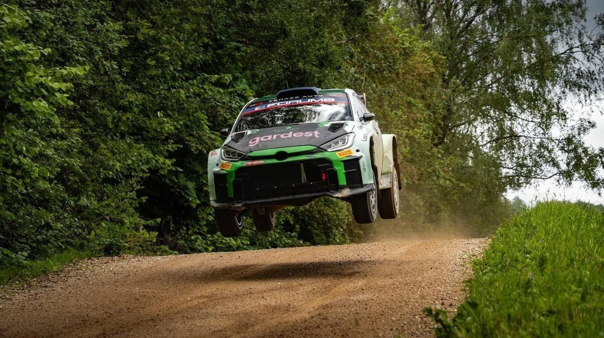
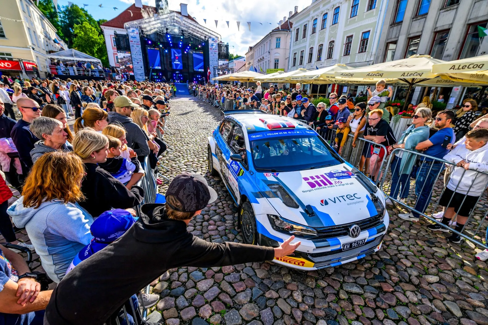
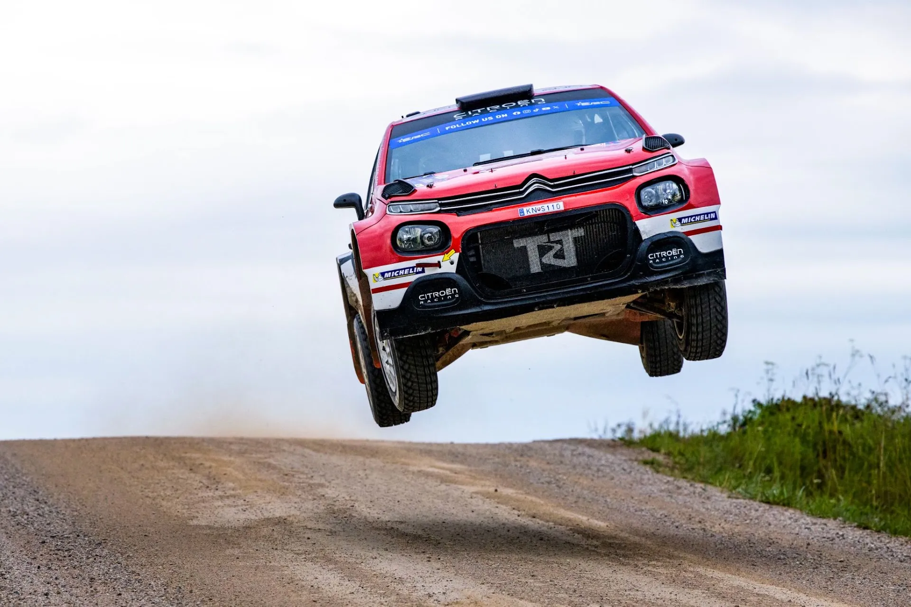
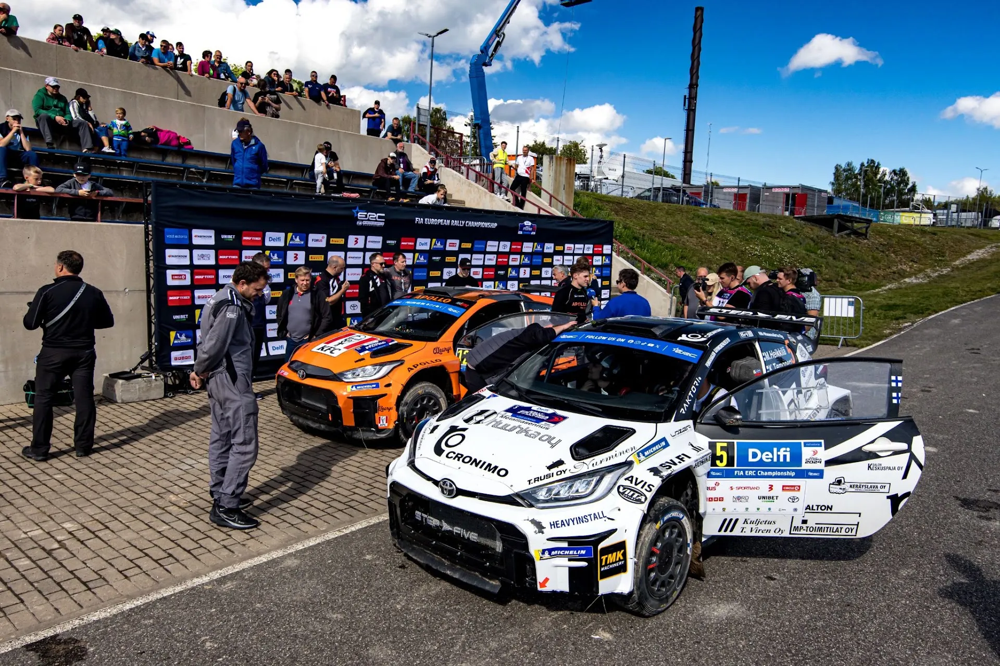
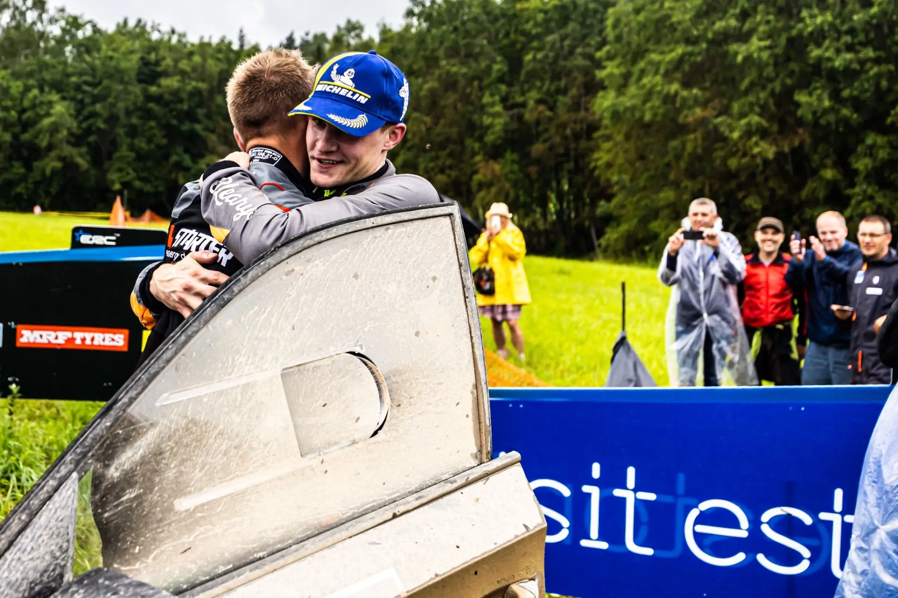

My Rally Estonia Experience
Greece, Austria, Latvia and then Estonia. A 17 hour trip to make it from Athens to Tartu to go to Estonia and meet Hugo and Silver. Was it worth it? Most definitely.
Our Rally Estonia experience started on Friday afternoon, in Tartu's city centre, for the ceremonial start. Despite the rally's ERC status for this year, the ceremonial start was definitely a spectacle, with a big show that beats out every other ceremonial start I have attended.

@World / Red Bull Content Pool
After we saw most of the Rally2 crews take the start, we headed to Tartu Vald for the day's Super Special Stage. The stage itself was alright, however, I was quite disappointed at the lack of people in attendance. This was something that became a theme for the rally as a whole, as only a small fraction of fans made the trip down to Otepää compared to the previous years. We stayed on the stage until the last car, mostly to witness the mighty GAZ trucks, and by the time the stage had finished, we were one of the few groups of people still in attendance.
On Saturday we went to two stages, Raanitsa and Kanepi. We didn't get to see Ott Tanak's crash, but we got to see the aftermath. We were at that spot, as what was left of the Hyundai i20 Rally1 was being recovered and towed away. After the second pass of Raanitsa we moved to Kanepi, where I fell in love with the road we took to get to the stage. That road is the one that the stage normally uses in the WRC, and also parts of it were used in 2015 in the ERC. A bit of a shame that it was left out, because it was full of crests, jumps, fast flowing corners and cambered turns. We also traversed through some great tarmac roads en route to Kanepi. These roads were of similar character to the gravel ones that are in the rally, being high speed, cambered and full of crests. If Urmo Aava is reading this, you have to try to host an event on these roads, it would be quite the spectacle. (Also I forgive you for not being that interested at me telling you that the Stobart Ford livery from 2009 was my favourite).

@World / Red Bull Content Pool
On Sunday we only went to the Service Park in the Tehvandi Sports Center and the Power Stage. For an ERC event, the Service Park was quite good, and it was easier for fans to have a chat with more "approachable" drivers lets say, as not many of them have been asked for an autograph before. If you spotted a guy with a white T-Shirt and a backpack, that constantly ended up on the broadcast then congrats, you got a glimpse of me. As a sidenote, nothing beats randomly seeing Hollie McRae and Vivek randomly standing behind you at a petrol station.

@World / Red Bull Content Pool
We chose to go to the finish of the Power Stage, to see the celebrations and the podium. However, torrential rain made our lives difficult, as we had to walk 2 kilometres in the rain, and in the end, it was all in vain, because despite all their hard work, the organisers couldn't complete the construction of the podium in time due to the strong winds and the rain. But that spot was still a brilliant choice, as we got to see the drama first hand, with Georg Linnamae beating Robert Virves on the final stage to win the rally by just 2.2 seconds! After that, it was time to say goodbye.

@World / Red Bull Content Pool
So what are my takeaways from this event? On the positives, the organisation is immaculate. A lot of marshals, the access roads to the stages were on the website and there were videos of the view a spectator would have on the stage, and those roads were also marked with signs with directions. The stages themselves could have been a bit better, but they were perfectly suitable to an ERC event. The stages south of Tartu are superior to the ones to the north anyway. On the negatives however, I was disappointed at the lack of people compared to previous years. I can understand not wanting to go to the forest stages, but come on, the SSS is 10 mins away from Tartu... I also felt the 65 euro ticket was a bit pricey, but take that with a pinch of salt, as there aren't any tickets for rally events in Greece. Lastly, the spectator spots could have been a bit closer to the stages, as in Kanepi for example we were almost 50m away from the road, in a field.
PS: Petrol Station food in Estonia is the best thing ever!


Comments